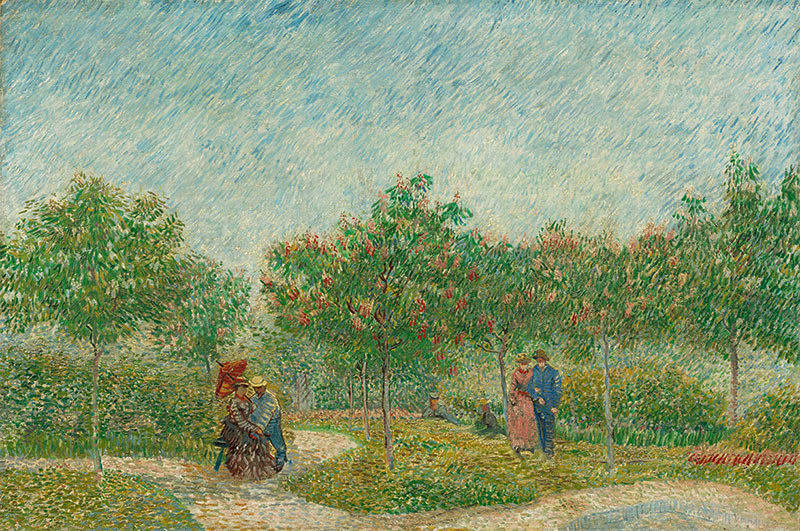

The Therapeutic Effect of Trail Running
Within the animal world, humans are physically remarkable primarily for one thing: our ability to run, persistently, over extraordinary distances…

What Love Requires
I’ve never seen a perfect life. All I see are travelers, students of being, who fill the world with their existence…

Presence Through Breathing
A great majority of people will say that life is accelerating the older they get, that the years seem to…